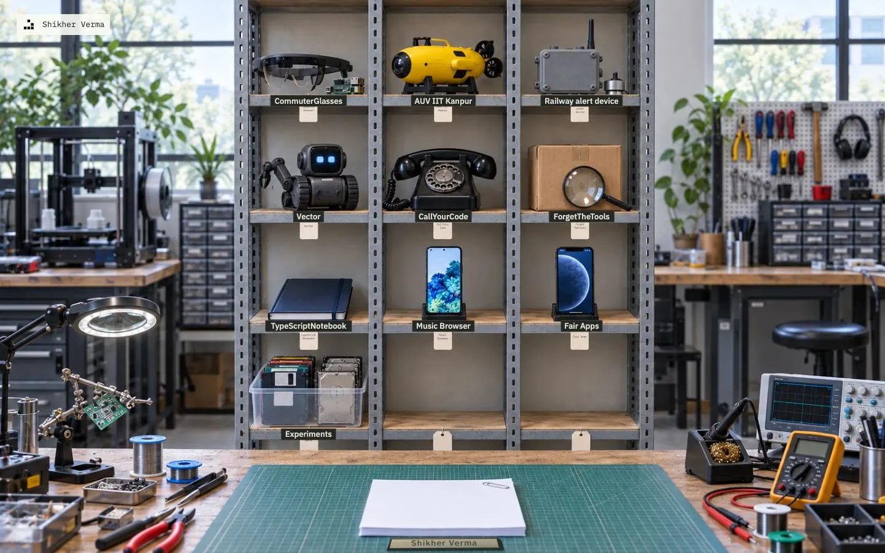
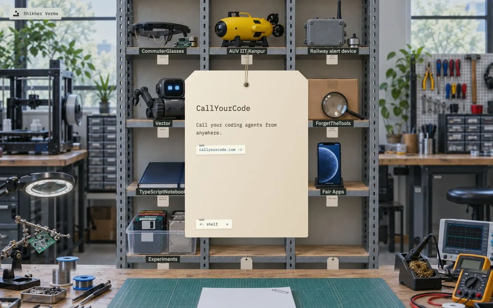

Shikher Verma
Projects in hardware and software, on a workshop shelf.
A personal site for Shikher Verma where the project list is a photographed steel shelf with ten cubbies. Each cubby holds an object standing in for one project.
Visit shikherverma.com
Design decisions
- The index is a full-bleed workshop photo: a steel shelf with an object per project (AUV submarine, rotary phone for CallYourCode, magnifier for ForgetTheTools) and a paper tag label under each.
- The shelf is real links laid over the image, so each cubby is keyboard-reachable with a "Read about ..." label.
- Clicking a cubby opens a large cream hang tag over the shelf with the project name, a one-line description and an outbound link, plus a "<- shelf" close button.
- Type is IBM Plex Sans for the identity chip and IBM Plex Mono on the tag, which suits the bench-and-labels theme.
- The foreground desk with a green cutting mat and a name plate carries the About link, so the page has no conventional navigation bar.
On a phone

Shikher Verma has a single theme, so there is one set of captures.
The flow, step by step


Further down the page